Contenido del manual
Contenido
Ingresar y tu panel
La fundación crea tu cuenta y te entrega tu correo y contraseña. Entra en aspy-web.vercel.app → Ingresar.
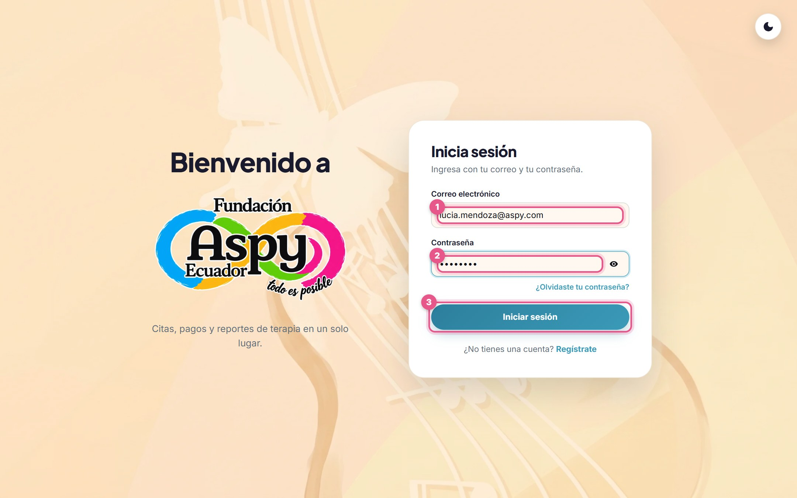
La primera vez que entres, el sistema te muestra la Política de Privacidad: léela hasta el final, marca las tres casillas de tu consentimiento (una es tu compromiso de confidencialidad con los datos de los pacientes) y presiona Acepto para continuar. Se pide una sola vez, y de nuevo solo si la política cambia.
Tu Vista General
Tu panel te muestra lo que tienes pendiente:
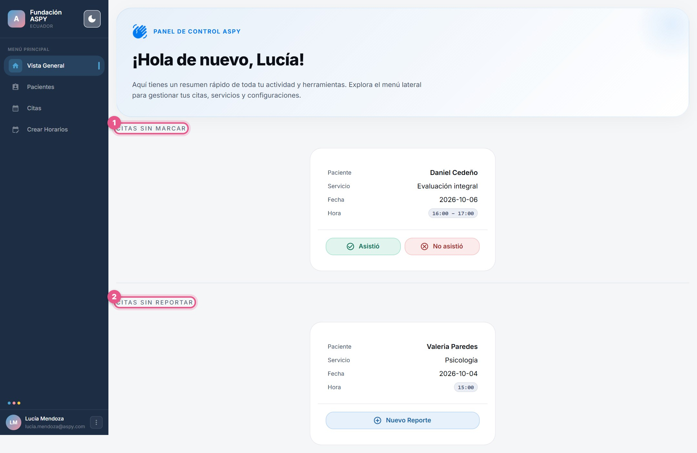
- 1 Citas sin marcar: citas confirmadas que ya empezaron y en las que aún no indicas si el paciente asistió.
- 2 Citas sin reportar: citas a las que el paciente asistió y que todavía no tienen reporte.
En el menú de la izquierda tienes: Pacientes, Citas (tu agenda) y Crear Horarios.
Las personas y datos de las imágenes son ejemplos creados para este manual.
Crear tus horarios
Los pacientes solo pueden agendar en los horarios que tú publicas. Cada horario es un turno de atención (por ejemplo, de 08:00 a 09:00).
- Abre “Crear Horarios”
A la izquierda está el formulario Nuevo horario; a la derecha, todos tus turnos agrupados por día.
- Completa el turno
Elige la fecha 1 (al tocar el campo se abre un calendario; también puedes escribirla como día/mes/año), la hora de inicio 2 y la hora de fin 3. El sistema te muestra un resumen y el tipo de turno (mañana o tarde). Presiona Guardar horario 4.
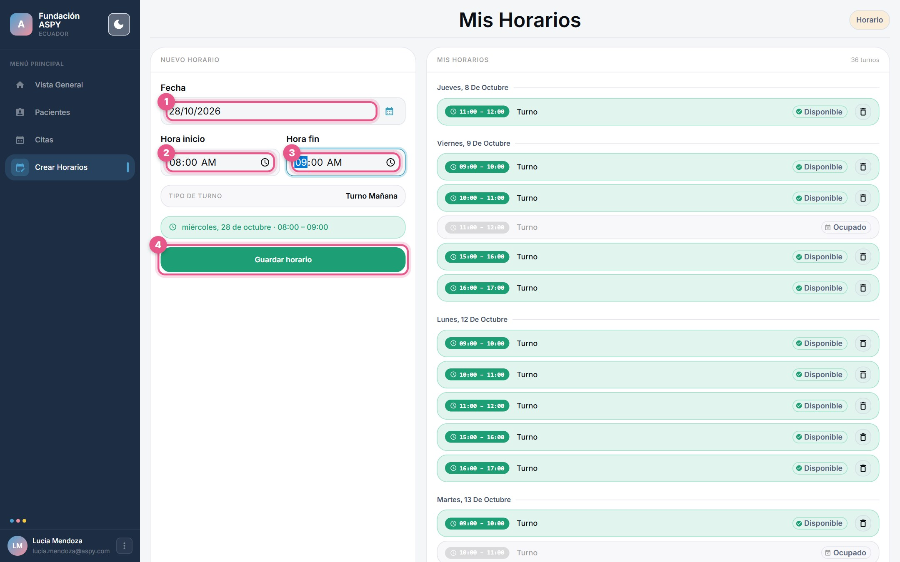
- Listo
Aparece el mensaje “Horario creado correctamente” y el turno se suma a tu lista como Disponible.
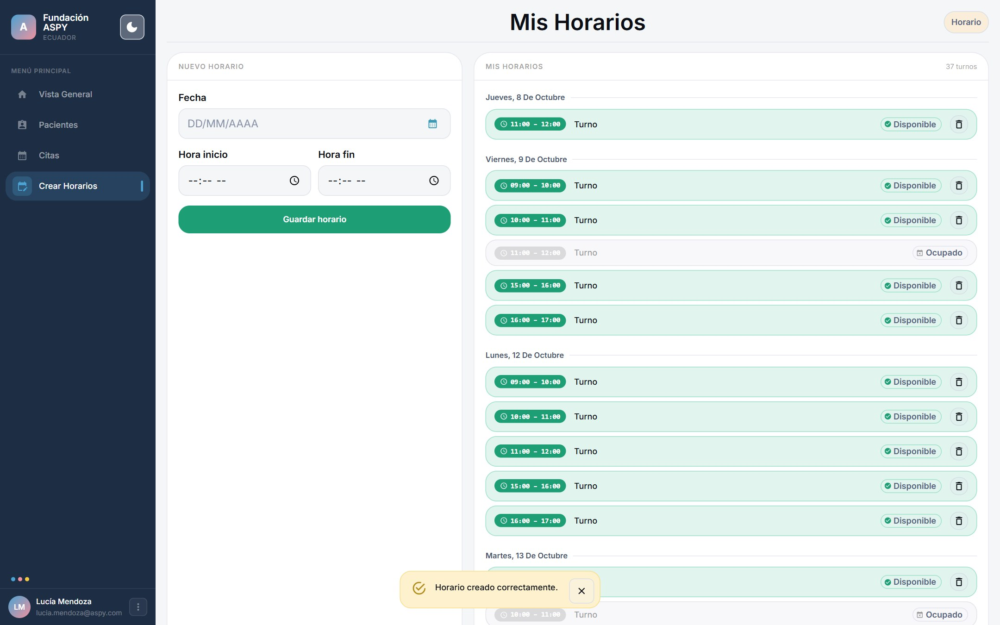
Tu lista de horarios
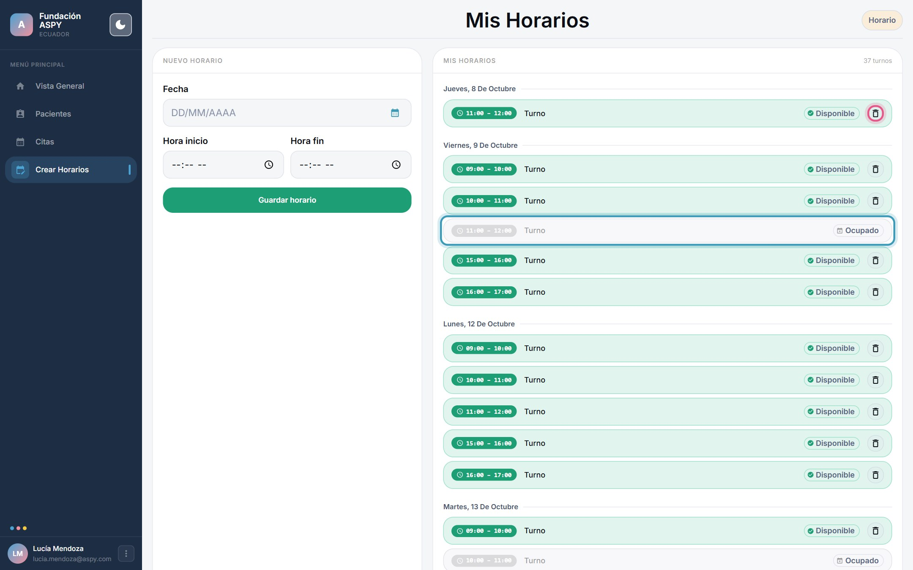
- Disponible (verde): nadie lo ha reservado. Con el tacho de basura (resaltado en rosado) puedes eliminarlo.
- Ocupado (gris, resaltado en celeste): un paciente ya lo reservó. No se puede eliminar; si necesitas liberarlo, pide a secretaría que cancele la cita.
No se pueden crear horarios en fechas pasadas ni que se crucen con otro tuyo (por ejemplo, 09:00–10:00 y 09:30–10:30 el mismo día).
Publica tus horarios con una o dos semanas de anticipación para que las familias puedan organizarse.
Tu agenda de citas
En Citas ves tu calendario con todas tus citas y su estado.
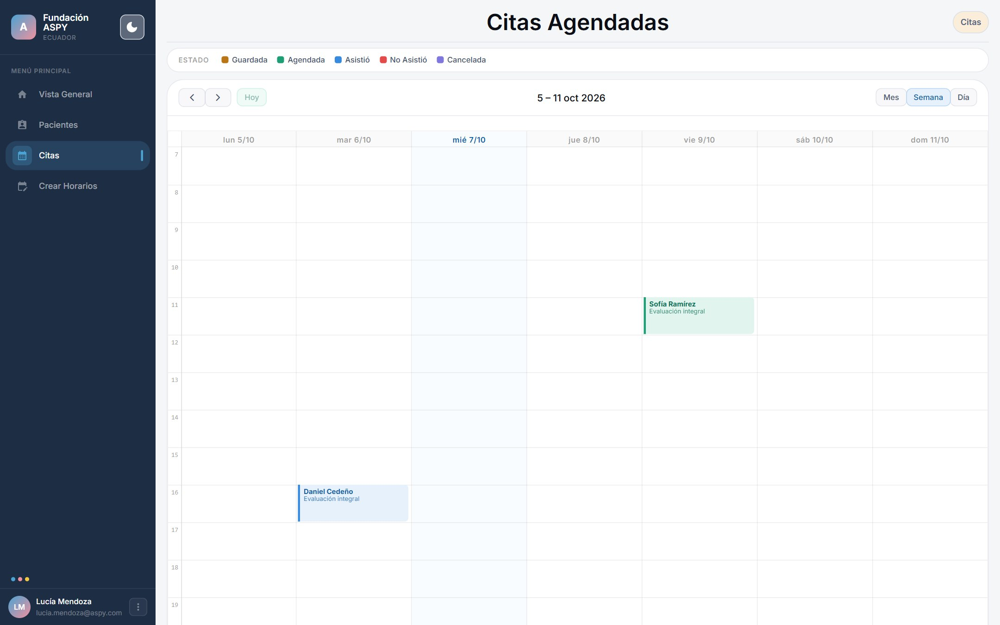
| Color | Qué significa |
|---|---|
| Guardada | El paciente reservó; secretaría está revisando el pago. |
| Agendada | Pago aprobado: la cita está confirmada. |
| Asistió | Marcaste que el paciente vino. |
| No asistió | Marcaste que el paciente no vino. |
| Cancelada | La cita se canceló. |
Usa ‹ › para cambiar de semana y Mes / Semana / Día para cambiar la vista. Haz clic en una cita para ver sus datos.
Marcar la asistencia
Al terminar cada sesión, indica si el paciente asistió. Lo haces desde tu Vista General, en Citas sin marcar.
- Busca la tarjeta de la cita
Cada tarjeta muestra paciente, servicio, fecha y hora. Presiona Asistió 1 o No asistió 2.
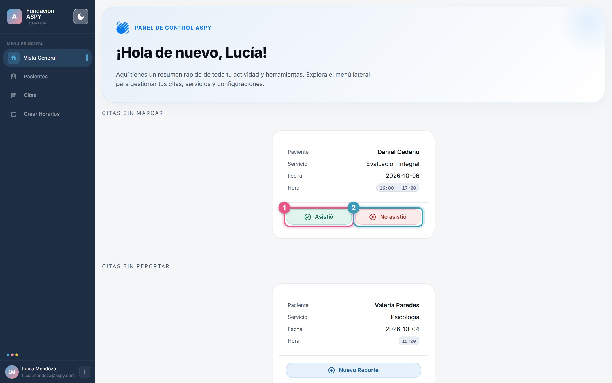
- Confirma
Revisa los datos de la cita y presiona Sí, asistió (o Sí, no asistió). Con Cancelar vuelves sin cambiar nada.
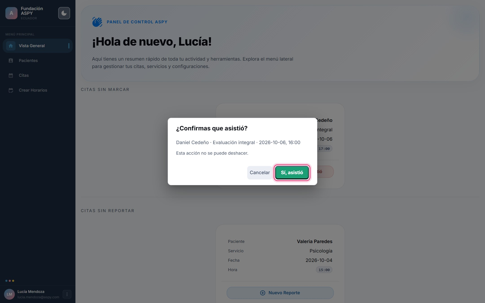
- La cita pasa a “Citas sin reportar”
Si marcaste Asistió, la cita baja a la sección Citas sin reportar para que subas el reporte.
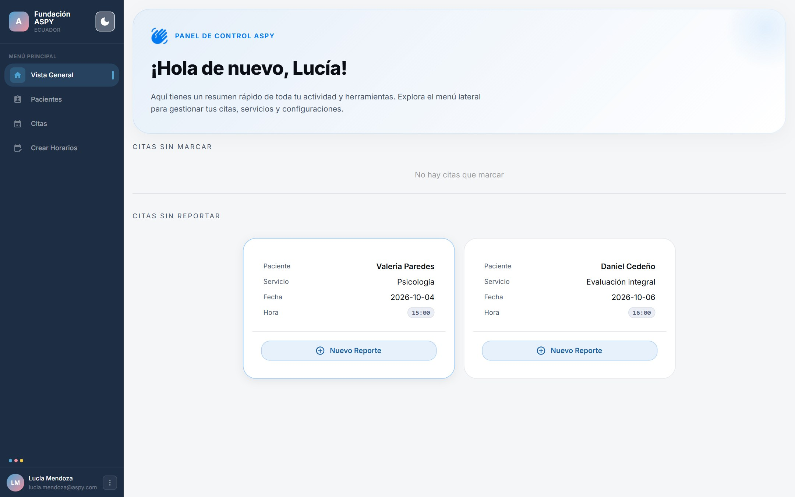
Antes de marcar, el sistema te muestra el paciente, el servicio, la fecha y la hora, y pide confirmar. No se puede deshacer: revisa bien antes de aceptar.
Las citas aparecen en “Citas sin marcar” recién cuando llega su hora de inicio; antes no se puede marcar la asistencia.
Subir el reporte de la sesión
El reporte es un documento PDF con tus observaciones y recomendaciones. El paciente lo podrá leer desde su cuenta.
- Presiona “Nuevo Reporte”
En Citas sin reportar, busca la cita y presiona Nuevo Reporte.
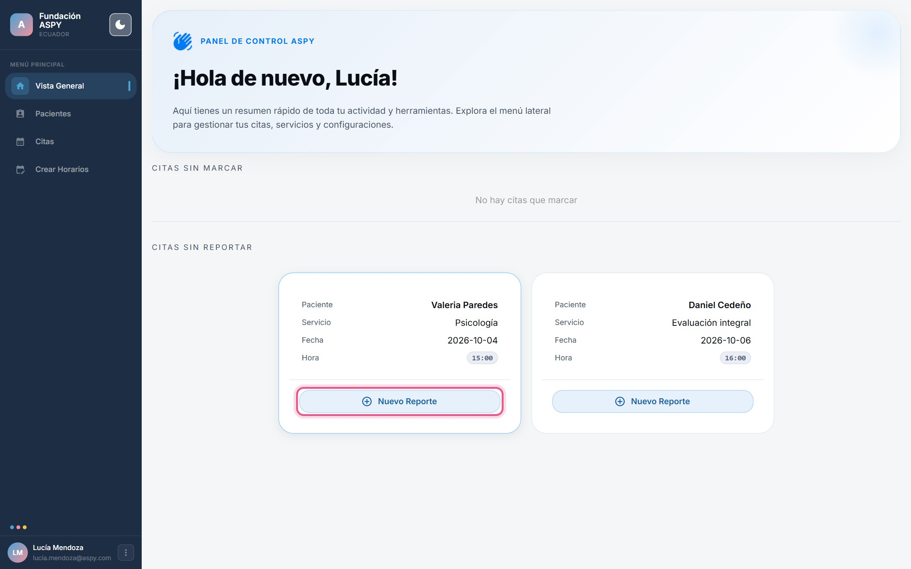
- Sube el archivo
Presiona Subir reporte y elige el PDF desde tu equipo (máximo 8 MB).
Si subes un archivo y no llegas a enviarlo, queda guardado sin usar: el sistema te avisa cuántos tienes, guarda como máximo 5 (el más antiguo se reemplaza) y los borra solos al día siguiente.
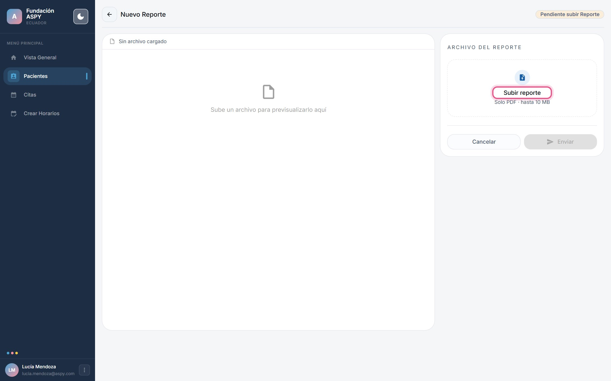
- Revisa y envía
El documento se muestra a la izquierda para que lo revises. Si es el correcto, presiona Enviar. Si te equivocaste de archivo, usa Cancelar y vuelve a empezar.
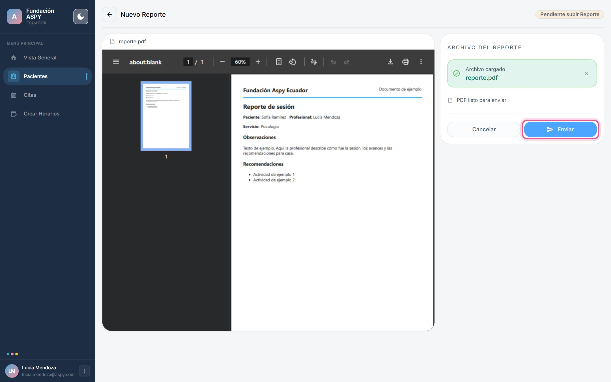
- ¡Enviado!
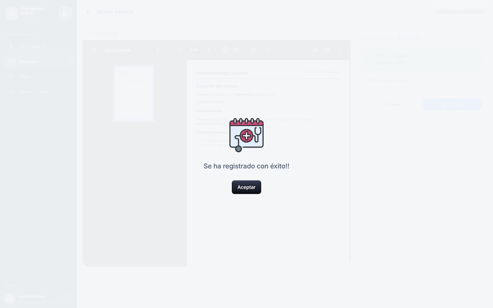
El reporte queda guardado con tu nombre como firma y la cita sale de “Citas sin reportar”.
Cada cita admite un solo reporte y no se puede reemplazar desde el sistema. Revisa el PDF antes de enviarlo.
Si escribes el reporte en Word, guárdalo como PDF con Archivo → Guardar como → PDF.
Los reportes solo los ven el paciente, tú y la administración. El personal de secretaría no tiene acceso.
Tus pacientes y su historial
En Pacientes aparecen solo las personas que tienen o tuvieron citas contigo.
- Elige un paciente
Haz clic en su fila: a la derecha verás un resumen (correo, edad, género, ocupación). Presiona Ver información completa.
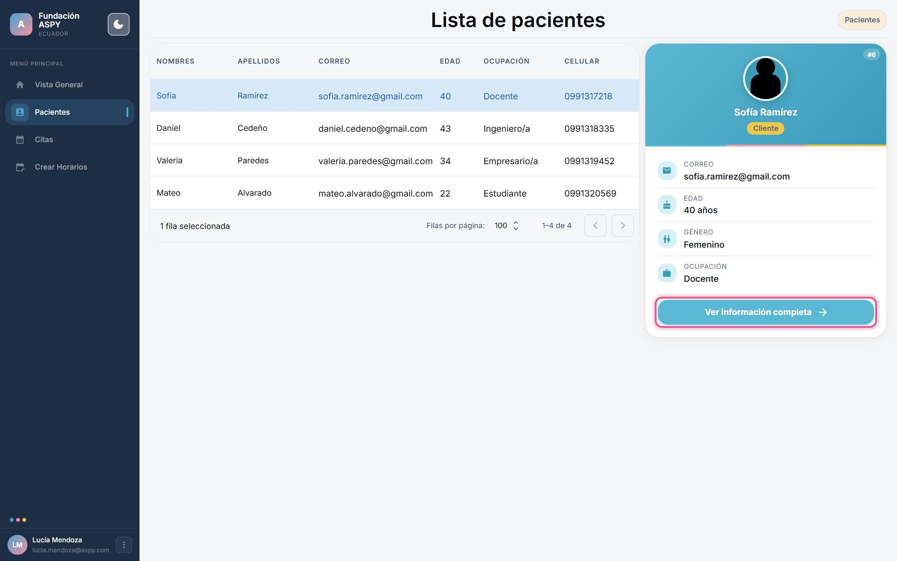
- Revisa su historial
Verás la línea de tiempo de sus citas contigo y sus datos de contacto. En cada cita, Ver detalles abre la cita.
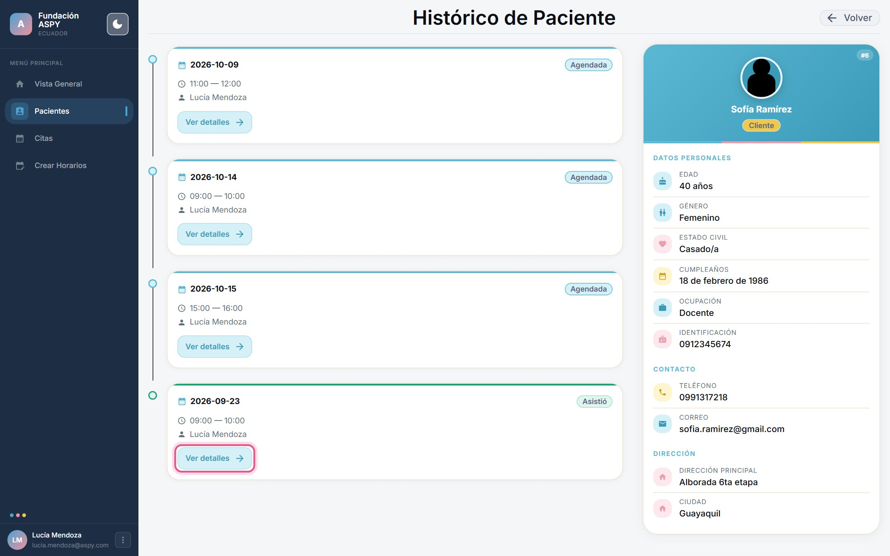
- Detalle de la cita
Muestra horario, profesional, paciente y el reporte de esa sesión, si ya existe. Con Descargar lo guardas en tu equipo.
🔒Los reportes son información clínica privada: solo los ven el paciente, tú (que atendiste la cita) y la Administración. Secretaría no los ve. Si descargas uno, guárdalo en un lugar seguro y no lo compartas fuera de la fundación.
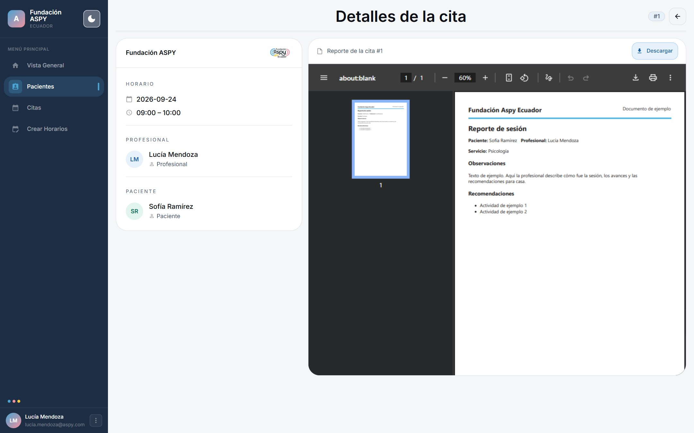
Tu cuenta
El botón ⋮ junto a tu nombre (abajo a la izquierda) abre tu Perfil, el Manual de uso (este manual), Privacidad y mis datos, Sobre ASPY y Cerrar sesión. También está Privacidad y mis datos, con la política vigente, la fecha en que la aceptaste y tus derechos sobre tus datos.
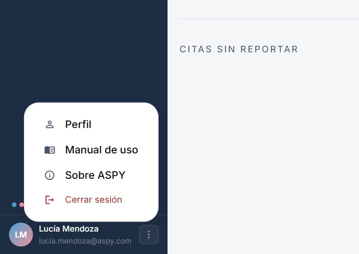
Este manual dentro del sistema
Con ⋮ → Manual de uso abres este manual sin salir del sistema, y desde ahí puedes descargarlo en PDF.
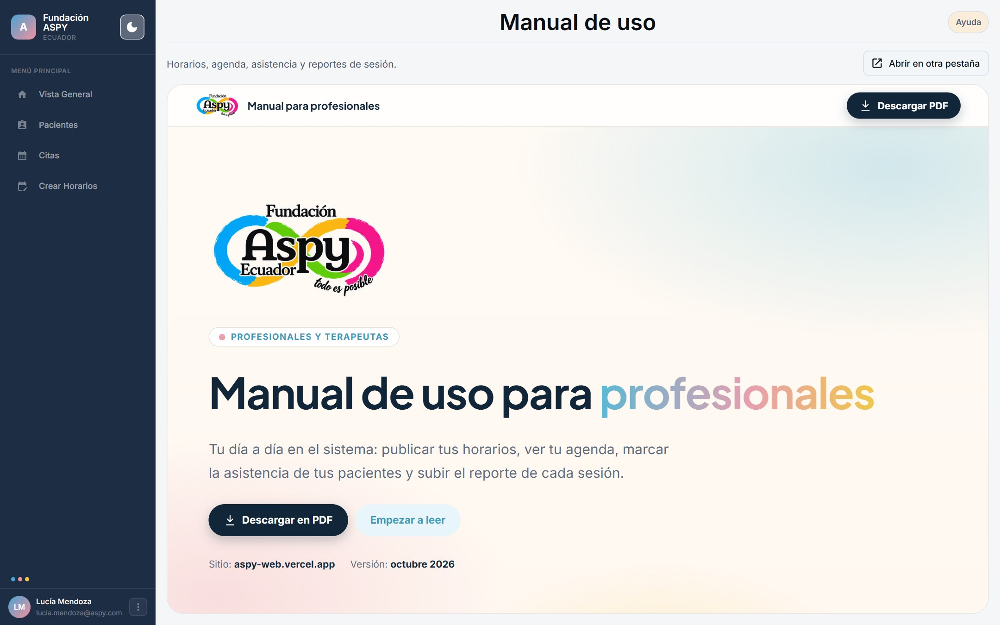
- En tu perfil, el lápiz te permite corregir tus datos. En el último paso puedes escribir una contraseña nueva; si lo dejas vacío, se conserva la actual.
- El botón de la luna (arriba a la izquierda) activa el modo oscuro.
- Desde el celular funciona igual: el menú se abre con el botón ☰ (arriba a la izquierda) y el botón de la luna queda arriba a la derecha.
Rutina recomendada
- Al inicio de la semana: revisa Crear Horarios y publica los turnos de las próximas semanas.
- Cada día: mira tu agenda en Citas.
- Después de cada sesión: marca la asistencia y sube el reporte.